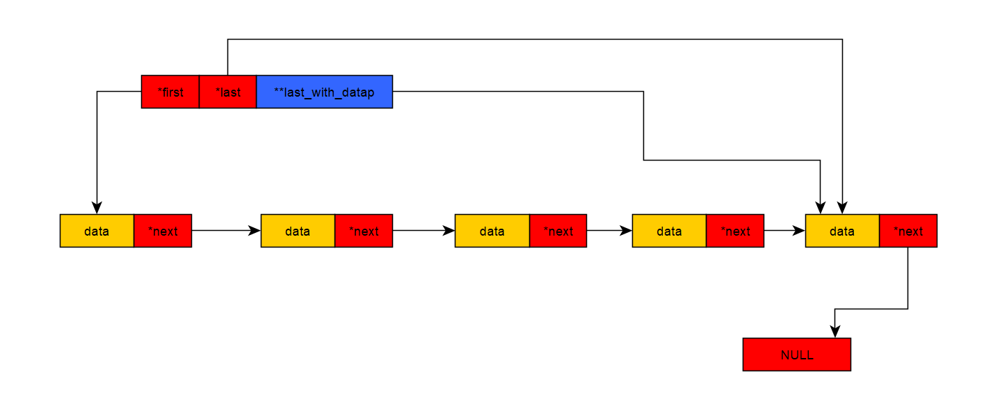

通常这些函数我们不会自己去调用他们，首先一般使用到它们是在bufferevent中，即在调用bufferevent_socket_new时会为input和output的bufferevent分配内存，并封装一系列的接口供用户调用，而接口的底层都是对evbuffer的操作，现在我们从struct evbuffer结构体开始:
struct evbuffer {
/** The first chain in this buffer's linked list of chains. */
struct evbuffer_chain *first;
/** The last chain in this buffer's linked list of chains. */
struct evbuffer_chain *last;
/**The last_with_data chain is the last chain that has any data in it.
* If all chains in the buffer are empty, it is the first chain.
* If the buffer has no chains, it is NULL.
* The last_with_datap pointer points at _whatever 'next' pointer_
* pointing at the last_with_data chain. If the last_with_data chain
* is the first chain, or it is NULL, then the last_with_datap pointer
* is &buf->first.
*/
struct evbuffer_chain **last_with_datap;
/** Total amount of bytes stored in all chains.*/
size_t total_len;
/** Number of bytes we have added to the buffer since we last tried to
* invoke callbacks. */
size_t n_add_for_cb;
/** Number of bytes we have removed from the buffer since we last
* tried to invoke callbacks. */
size_t n_del_for_cb;
#ifndef EVENT__DISABLE_THREAD_SUPPORT
/** A lock used to mediate access to this buffer. */
void *lock;
#endif
/** True iff we should free the lock field when we free this
* evbuffer. */
unsigned own_lock : 1;
/** True iff we should not allow changes to the front of the buffer
* (drains or prepends). */
unsigned freeze_start : 1;
/** True iff we should not allow changes to the end of the buffer
* (appends) */
unsigned freeze_end : 1;
/** True iff this evbuffer's callbacks are not invoked immediately
* upon a change in the buffer, but instead are deferred to be invoked
* from the event_base's loop. Useful for preventing enormous stack
* overflows when we have mutually recursive callbacks, and for
* serializing callbacks in a single thread. */
unsigned deferred_cbs : 1;
#ifdef _WIN32
/** True iff this buffer is set up for overlapped IO. */
unsigned is_overlapped : 1;
#endif
/** Zero or more EVBUFFER_FLAG_* bits */
ev_uint32_t flags;
/** Used to implement deferred callbacks. */
struct event_base *cb_queue;
/** A reference count on this evbuffer. When the reference count
* reaches 0, the buffer is destroyed. Manipulated with
* evbuffer_incref and evbuffer_decref_and_unlock and
* evbuffer_free. */
int refcnt;
/** A struct event_callback handle to make all of this buffer's callbacks
* invoked from the event loop. */
struct event_callback deferred;
/** A doubly-linked-list of callback functions */
LIST_HEAD(evbuffer_cb_queue, evbuffer_cb_entry) callbacks;
/** The parent bufferevent object this evbuffer belongs to.
* NULL if the evbuffer stands alone. */
struct bufferevent *parent;
};
struct evbuffer_chain
struct evbuffer_chain {
/** points to next buffer in the chain */
struct evbuffer_chain *next;
/** total allocation available in the buffer field. */
size_t buffer_len;
/** unused space at the beginning of buffer or an offset into a
* file for sendfile buffers. */
ev_misalign_t misalign;
/** Offset into buffer + misalign at which to start writing.
* In other words, the total number of bytes actually stored
* in buffer. */
size_t off;
/** Set if special handling is required for this chain */
unsigned flags;
#define EVBUFFER_FILESEGMENT 0x0001 /**< A chain used for a file segment */
#define EVBUFFER_SENDFILE 0x0002 /**< a chain used with sendfile */
#define EVBUFFER_REFERENCE 0x0004 /**< a chain with a mem reference */
#define EVBUFFER_IMMUTABLE 0x0008 /**< read-only chain */
/** a chain that mustn't be reallocated or freed, or have its contents
* memmoved, until the chain is un-pinned. */
#define EVBUFFER_MEM_PINNED_R 0x0010
#define EVBUFFER_MEM_PINNED_W 0x0020
#define EVBUFFER_MEM_PINNED_ANY (EVBUFFER_MEM_PINNED_R|EVBUFFER_MEM_PINNED_W)
/** a chain that should be freed, but can't be freed until it is
* un-pinned. */
#define EVBUFFER_DANGLING 0x0040
/** a chain that is a referenced copy of another chain */
#define EVBUFFER_MULTICAST 0x0080
/** number of references to this chain */
int refcnt;
/** Usually points to the read-write memory belonging to this
* buffer allocated as part of the evbuffer_chain allocation.
* For mmap, this can be a read-only buffer and
* EVBUFFER_IMMUTABLE will be set in flags. For sendfile, it
* may point to NULL.
*/
unsigned char *buffer;
};
evbuffer结构体在bufferevent中是用来存储数据的，这些数据存放在evbuffer的一条链表中，每个链表成员都是一个evbufer_chain结构。
图示如下：

创建一个evbuffer结构，在bufferevent_socket_new中函数bufferevent_init_common_会分配两个evuffer分别作为输入和输出缓冲区。
struct evbuffer *
evbuffer_new(void)
{
struct evbuffer *buffer;
buffer = mm_calloc(1, sizeof(struct evbuffer));//为evbuffer分配内存
if (buffer == NULL)
return (NULL);
LIST_INIT(&buffer->callbacks);//初始化回调函数队列
buffer->refcnt = 1;
buffer->last_with_datap = &buffer->first;
return (buffer);
}
函数evbuffer_chain_new用于创建一个数据块（就这么称呼吧）
static struct evbuffer_chain *evbuffer_chain_new(size_t size)
{
struct evbuffer_chain *chain;
size_t to_alloc;
if (size > EVBUFFER_CHAIN_MAX - EVBUFFER_CHAIN_SIZE)
return (NULL);//限制了最大的evbuffer_chain的数据存放区大小，这个大小是((size_t)(9223372036854775807L)) - sizeof(struct evbuffer_chain))
size += EVBUFFER_CHAIN_SIZE;//此时size为evbuffer_chain结构和数据存放区大小的总和
/* get the next largest memory that can hold the buffer */
if (size < EVBUFFER_CHAIN_MAX / 2) {
to_alloc = MIN_BUFFER_SIZE;
while (to_alloc < size) {
to_alloc <<= 1;
}//如果size小于最大内存块的一半，则以内存块最小值开始翻倍，直到内存块值大于size
} else {
to_alloc = size;//如果size大于最大内存块的一半，就直接分配size大小的内存
}
/* we get everything in one chunk */
if ((chain = mm_malloc(to_alloc)) == NULL)
return (NULL);//内存分配
memset(chain, 0, EVBUFFER_CHAIN_SIZE);。。//清0除数据块之外的内存
chain->buffer_len = to_alloc - EVBUFFER_CHAIN_SIZE;//此时buffer_len记录为数据块的大小
/* this way we can manipulate the buffer to different addresses,
* which is required for mmap for example.
*/
chain->buffer = EVBUFFER_CHAIN_EXTRA(unsigned char, chain);//chain->buffer = (unsigned char *)((struct evbuffer_chain *)(chain) + 1);指向此struct evbuffer_chain的尾地址的下一个字节
chain->refcnt = 1;
return (chain);
}
函数evbuffer_chain_insert，用于插入数据块到evbuffer
static void
evbuffer_chain_insert(struct evbuffer *buf,
struct evbuffer_chain *chain)
{
ASSERT_EVBUFFER_LOCKED(buf);
if (*buf->last_with_datap == NULL) {
/* There are no chains data on the buffer at all. */
EVUTIL_ASSERT(buf->last_with_datap == &buf->first);
EVUTIL_ASSERT(buf->first == NULL);
buf->first = buf->last = chain;//第一次插入数据，首尾指针都应该指向此内存块
} else {
struct evbuffer_chain **chp;
chp = evbuffer_free_trailing_empty_chains(buf);
static struct evbuffer_chain **
evbuffer_free_trailing_empty_chains(struct evbuffer *buf)
{
struct evbuffer_chain **ch = buf->last_with_datap;
/* Find the first victim chain. It might be *last_with_datap */
while ((*ch) && ((*ch)->off != 0 || CHAIN_PINNED(*ch)))
//(*ch)->off != 0表示该evbuffer_chain有数据了，CHAIN_PINNED(*ch)则表示该evbuffer_chain不能被修改，在链表中寻找到一个可以使用的evbuffer_chain，可以使用是指该chain没有数据并且可以修改
ch = &(*ch)->next;//直到找到一个这样的内存块
if (*ch) {//evbuffer_chain始终是指向最后一个有数据的buffer_chain，如果后面有空的数据块，就都释放掉
EVUTIL_ASSERT(evbuffer_chains_all_empty(*ch));
evbuffer_free_all_chains(*ch);
*ch = NULL;
}
return ch;
}
*chp = chain;
if (chain->off)
buf->last_with_datap = chp;//指向传如的chain的地址，，如果此chain的off不为0，即里面有数据，则让buf->last_with_datap指向它
buf->last = chain;
}
buf->total_len += chain->off;
}
向链表尾部添加数据，函数evbuffer_add
int
evbuffer_add(struct evbuffer *buf, const void *data_in, size_t datlen)
{
struct evbuffer_chain *chain, *tmp;
const unsigned char *data = data_in;
size_t remain, to_alloc;
int result = -1;
EVBUFFER_LOCK(buf);
if (buf->freeze_end) {
goto done;
}/冻结缓冲区尾部，禁止诗句追加
/* Prevent buf->total_len overflow */
if (datlen > EV_SIZE_MAX - buf->total_len) {
goto done;
}//数据长度大于了最大长度减去buf中已经存放数据的长度，EV_SIZE_MAX值为18446744073709551615UL
if (*buf->last_with_datap == NULL) {
chain = buf->last;//第一次插入数据
} else {
chain = *buf->last_with_datap;
}//如果不是第一次插入数据，chain指向最后一和存放有数据的evbuffer_chain
/* If there are no chains allocated for this buffer, allocate one
* big enough to hold all the data. */
if (chain == NULL) {
chain = evbuffer_chain_new(datlen);
if (!chain)
goto done;
evbuffer_chain_insert(buf, chain);
}//chain为NULL表明第一次插入数据，分配一个能hold住这些数据的内存块
if ((chain->flags & EVBUFFER_IMMUTABLE) == 0) {//如果最后一个chain不是一个read-only的chain
/* Always true for mutable buffers */
EVUTIL_ASSERT(chain->misalign >= 0 &&
(ev_uint64_t)chain->misalign <= EVBUFFER_CHAIN_MAX);
remain = chain->buffer_len - (size_t)chain->misalign - chain->off;//最后一个chain有剩余数据块空间
if (remain >= datlen) {//剩余空间可以存放下数据
/* there's enough space to hold all the data in the
* current last chain */
memcpy(chain->buffer + chain->misalign + chain->off,
data, datlen);
chain->off += datlen;
buf->total_len += datlen;
buf->n_add_for_cb += datlen;
goto out;
} else if (!CHAIN_PINNED(chain) &&
evbuffer_chain_should_realign(chain, datlen)) {//该chain可修改，且通过调整后也可以放下此次数据。这里调整的意思应该是这个chain的中本来有数据，但是数据并不在数据块的首地址，即数据块前面是有空余的，将chain中的原始数据移动到数据块首地址后，剩余空间可以放下此次数据
/* we can fit the data into the misalignment */
evbuffer_chain_align(chain);//调整数据
memcpy(chain->buffer + chain->off, data, datlen);
chain->off += datlen;
buf->total_len += datlen;
buf->n_add_for_cb += datlen;
goto out;
}
} else {
/* we cannot write any data to the last chain */
remain = 0;//这个数据块不能再写入数据了，即本来chian链表中最后一个数据块有数据，但是数据刚好写满，或者此数据块中数据不满，但是调整后也不能容纳此次数据，就该分配新的数据块了
}
to_alloc = chain->buffer_len;
if (to_alloc <= EVBUFFER_CHAIN_MAX_AUTO_SIZE/2)
to_alloc <<= 1;
if (datlen > to_alloc)
to_alloc = datlen;
tmp = evbuffer_chain_new(to_alloc);//分配一个chain内存块
if (tmp == NULL)
goto done;
if (remain) {
memcpy(chain->buffer + chain->misalign + chain->off,
data, remain);
chain->off += remain;
buf->total_len += remain;
buf->n_add_for_cb += remain;
}//前一个数据块中数据不满，但是调整后也不能容纳此次数据，先将前一个数据块写满
data += remain;
datlen -= remain;
memcpy(tmp->buffer, data, datlen);//将多于数据放入到新分配的内存块
tmp->off = datlen;
evbuffer_chain_insert(buf, tmp);/插入此chain
buf->n_add_for_cb += datlen;//记录添加了多少数据
out:
evbuffer_invoke_callbacks_(buf);//这个函数待会分析
result = 0;
done:
EVBUFFER_UNLOCK(buf);
return result;
}
同样还有操在链表头部添加数据，从中复制数据的操作
现在看看从evbuffer中删除数据：
int
evbuffer_drain(struct evbuffer *buf, size_t len)
{
struct evbuffer_chain *chain, *next;
size_t remaining, old_len;
int result = 0;
EVBUFFER_LOCK(buf);
old_len = buf->total_len;
if (old_len == 0)
goto done;
if (buf->freeze_start) {
result = -1;
goto done;
}//冻结数据首部，防止添加数据到evbuffer的chain链首部
if (len >= old_len && !HAS_PINNED_R(buf)) {//要删除的数据量大于等于已有的数据量。并且这个evbuffer是可以删除的
len = old_len;
for (chain = buf->first; chain != NULL; chain = next) {
next = chain->next;
evbuffer_chain_free(chain);//删除所有数据块
}
ZERO_CHAIN(buf);//重新初始化evbuffer_chain链表
} else {//要删除的数据量小于已有的数据量
if (len >= old_len)
len = old_len;
buf->total_len -= len;
remaining = len;
for (chain = buf->first;
remaining >= chain->off;
chain = next) {
next = chain->next;
remaining -= chain->off;
if (chain == *buf->last_with_datap) {//如果已经删除到最后一个数据块
buf->last_with_datap = &buf->first;
}
if (&chain->next == buf->last_with_datap)//删除到倒数第二个有数据的evbuffer_chain
buf->last_with_datap = &buf->first;
if (CHAIN_PINNED_R(chain)) {//这个chain被固定了，不能删除
EVUTIL_ASSERT(remaining == 0);
chain->misalign += chain->off;
chain->off = 0;
break;//后面的evbuffer_chain也是固定的
} else
evbuffer_chain_free(chain);//直接删除chain
}
//到这里，表明这个chain中只能删除部分数据
buf->first = chain;
EVUTIL_ASSERT(remaining <= chain->off);
chain->misalign += remaining;//清除掉应该删除的数据，这个域存放没有被删除的数据的第一个字节的数组下标
chain->off -= remaining;//删除数据，记录偏移量，此处偏移量已经不是从数据块首部开始了，而是从misalign开始
}
buf->n_del_for_cb += len;//记录被删除了多少数据
/* Tell someone about changes in this buffer */
evbuffer_invoke_callbacks_(buf);//这个待会看
done:
EVBUFFER_UNLOCK(buf);
return result;
}
我们一般不会直接删除数据，而是获取这些数据再从数据块删除它们，也就是先复制这些数据到另一个地方，再删除这些数据。
/* Reads data from an event buffer and drains the bytes read */
int
evbuffer_remove(struct evbuffer *buf, void *data_out, size_t datlen)
{
ev_ssize_t n;
EVBUFFER_LOCK(buf);
n = evbuffer_copyout_from(buf, NULL, data_out, datlen);//复制原理很简单，memcpy
if (n > 0) {
if (evbuffer_drain(buf, n)<0)//删除
n = -1;
}
EVBUFFER_UNLOCK(buf);
return (int)n;
}
至此一般我们添加数据会调用到函数evbuffer_add，删除或说移除数据调用函数evbuffer_remove
现在看看evbuffer的回调函数
evbuffer中还有一个很重要的成员：LIST_HEAD(evbuffer_cb_queue, evbuffer_cb_entry) callbacks;回调函数链表。
struct evbuffer_cb_info {
/** The number of bytes in this evbuffer when callbacks were last
* invoked. */
size_t orig_size;//添加或者删除数据之前的evbuffer有多少字节的数据
/** The number of bytes added since callbacks were last invoked. */
size_t n_added;//添加了多少数据
/** The number of bytes removed since callbacks were last invoked. */
size_t n_deleted;//删除了多少数据
因为每次删除或者添加数据都会调用回调函数，所以上面的三个成员只能记录从上一次
回调函数被调用后，到本次回调函数被调用这段时间的情况
};
struct evbuffer_cb_entry {
/** Structures to implement a doubly-linked queue of callbacks */
LIST_ENTRY(evbuffer_cb_entry) next;
/** The callback function to invoke when this callback is called.
If EVBUFFER_CB_OBSOLETE is set in flags, the cb_obsolete field is
valid; otherwise, cb_func is valid. */
union {
evbuffer_cb_func cb_func;
evbuffer_cb cb_obsolete;
} cb;
/** Argument to pass to cb. */
void *cbarg;
/** Currently set flags on this callback. */
ev_uint32_t flags;
};
typedef void (*evbuffer_cb_func)(struct evbuffer *buffer, const struct evbuffer_cb_info *
info, void *arg);
typedef void (*evbuffer_cb)(struct evbuffer *buffer, size_t old_len, size_t new_len,
void *arg);
设置回调函数：
struct evbuffer_cb_entry *
evbuffer_add_cb(struct evbuffer *buffer, evbuffer_cb_func cb, void *cbarg)
{
struct evbuffer_cb_entry *e;
if (! (e = mm_calloc(1, sizeof(struct evbuffer_cb_entry))))
return NULL;
EVBUFFER_LOCK(buffer);
e->cb.cb_func = cb;
e->cbarg = cbarg;
e->flags = EVBUFFER_CB_ENABLED;
LIST_INSERT_HEAD(&buffer->callbacks, e, next);//插入到回调函数链表
EVBUFFER_UNLOCK(buffer);
return e;
}
如何调用回调函数
static void
evbuffer_run_callbacks(struct evbuffer *buffer, int running_deferred)
{
struct evbuffer_cb_entry *cbent, *next;
struct evbuffer_cb_info info;
size_t new_size;
ev_uint32_t mask, masked_val;
int clear = 1;
if (running_deferred) {
mask = EVBUFFER_CB_NODEFER|EVBUFFER_CB_ENABLED;
masked_val = EVBUFFER_CB_ENABLED;
} else if (buffer->deferred_cbs) {
mask = EVBUFFER_CB_NODEFER|EVBUFFER_CB_ENABLED;
masked_val = EVBUFFER_CB_NODEFER|EVBUFFER_CB_ENABLED;
/* Don't zero-out n_add/n_del, since the deferred callbacks
will want to see them. */
clear = 0;
} else {
mask = EVBUFFER_CB_ENABLED;
masked_val = EVBUFFER_CB_ENABLED;
}
ASSERT_EVBUFFER_LOCKED(buffer);
if (LIST_EMPTY(&buffer->callbacks)) {
buffer->n_add_for_cb = buffer->n_del_for_cb = 0;
return;
}
if (buffer->n_add_for_cb == 0 && buffer->n_del_for_cb == 0)
return;
new_size = buffer->total_len;
info.orig_size = new_size + buffer->n_del_for_cb - buffer->n_add_for_cb;
info.n_added = buffer->n_add_for_cb;
info.n_deleted = buffer->n_del_for_cb;
if (clear) {
buffer->n_add_for_cb = 0;
buffer->n_del_for_cb = 0;
}
for (cbent = LIST_FIRST(&buffer->callbacks);
cbent != LIST_END(&buffer->callbacks);
cbent = next) {
/* Get the 'next' pointer now in case this callback decides
* to remove itself or something. */
next = LIST_NEXT(cbent, next);
if ((cbent->flags & mask) != masked_val)
continue;
if ((cbent->flags & EVBUFFER_CB_OBSOLETE))
cbent->cb.cb_obsolete(buffer,
info.orig_size, new_size, cbent->cbarg);
else
cbent->cb.cb_func(buffer, &info, cbent->cbarg);//遍历回调函数队列，调用回调函数
}
}
在看到前面的 evbuffer_invoke_callbacks_函数
void
evbuffer_invoke_callbacks_(struct evbuffer *buffer)
{
if (LIST_EMPTY(&buffer->callbacks)) {
buffer->n_add_for_cb = buffer->n_del_for_cb = 0;
return;
}
if (buffer->deferred_cbs) {
if (event_deferred_cb_schedule_(buffer->cb_queue, &buffer->deferred)) {
evbuffer_incref_and_lock_(buffer);
if (buffer->parent)
bufferevent_incref_(buffer->parent);
EVBUFFER_UNLOCK(buffer);
}
}
evbuffer_run_callbacks(buffer, 0);
}
即每次添加数据到evbuffer或从evbuffer删除数据，都会调用此函数